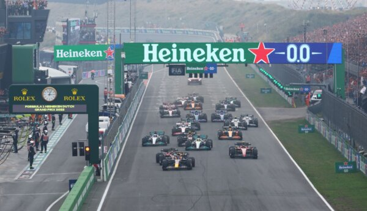
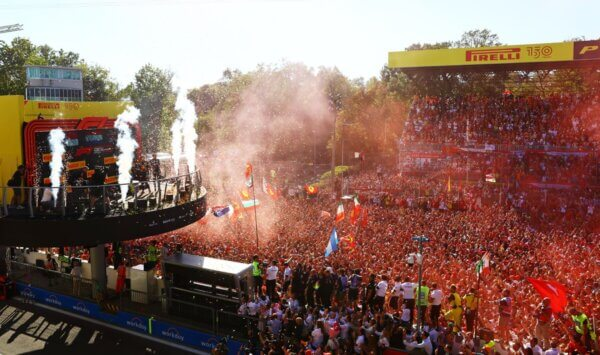
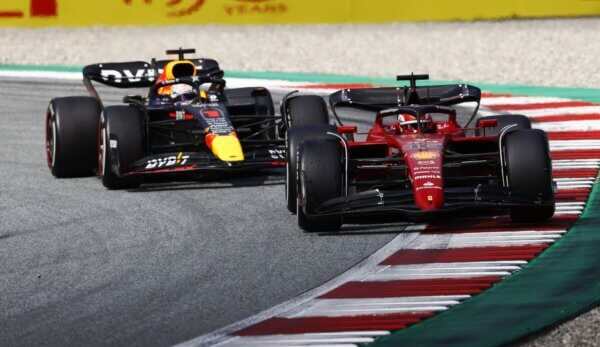
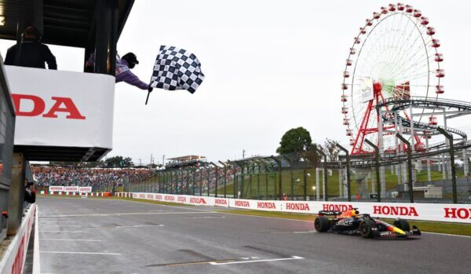
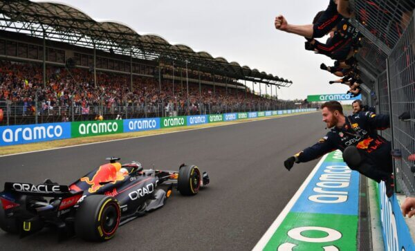
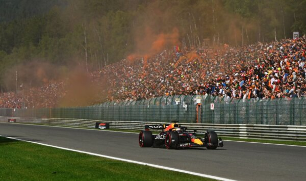

Poznajmy wyścigi F1 2022
zdjęcia z torów wyścigowych

GP Holandii

GP Włoch

GP Austrii

GP Japonii

GP na Węgrzech

GP Francji
GP Holandii
GP Włoch
GP Austrii
GP Japonii
GP na Węgrzech
GP Francji